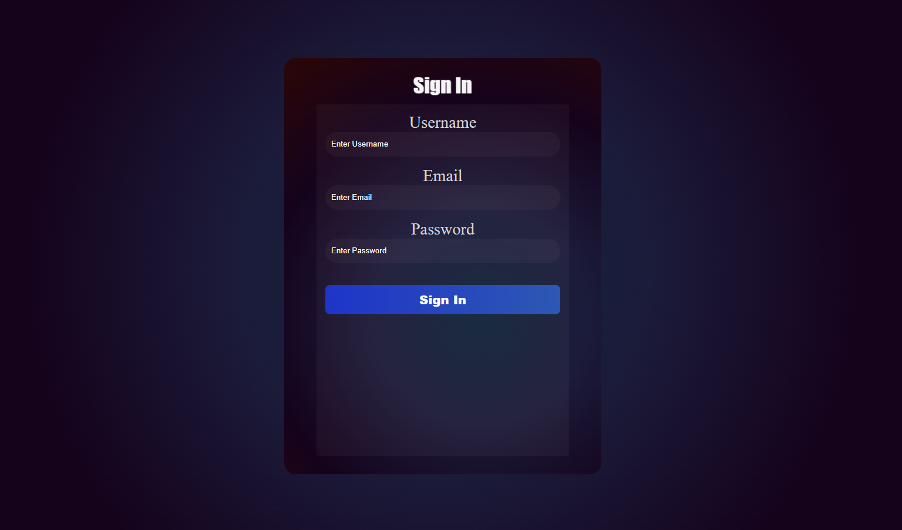
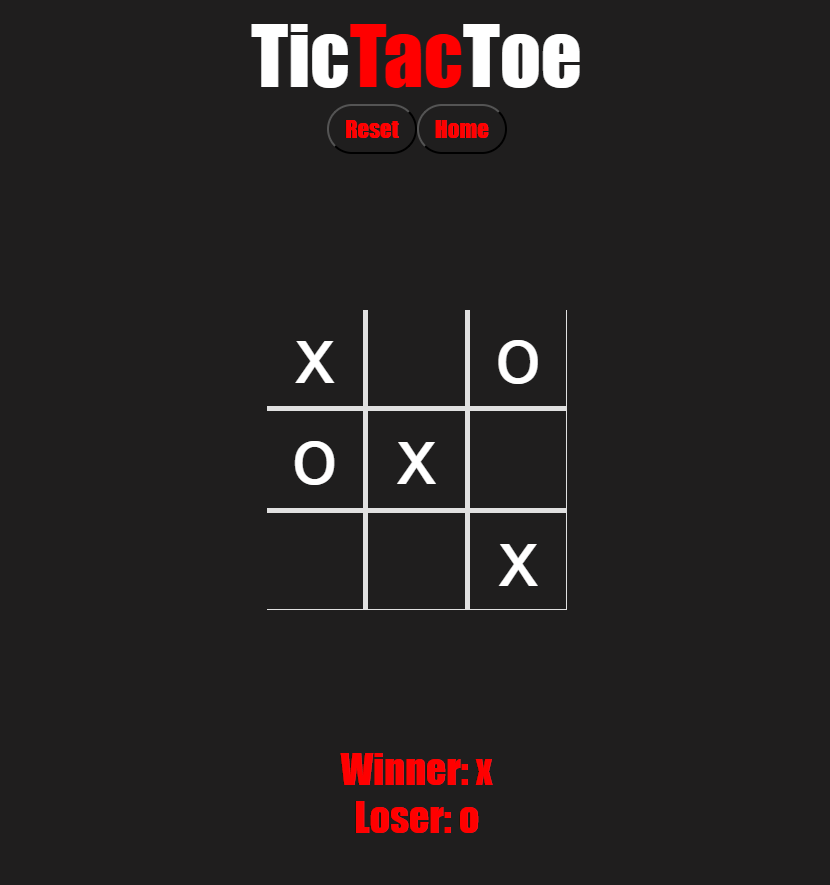

This website showcases some of my interests and academic projects. Explore my work and learn more about who I am and what motivates me.
I am originally from Venezuela and fluent in both Spanish and English. I am a student at Indiana University pursing a Computer Science degree with a focus on Software Engineering. I've always had a strong interest in technology and problem-solving, which is why I enjoy developing creative solutions through code.
I'm curious about how our technological devices work beneath the surface. I like writing code that solves real problems, and understanding the logic behind the tools we use every day. I would like to pursue a job that allows me to develop my critical thinking skills and to create something that is helpful to others.

This is a sign in page I decided to do during the summer. I started to see lots of instagram reels about people using node.js to create apps and websites, so I created my own, non-interactive, sign in page. I used this idea to experiment with my previous html knowledge and learn more about css animations. However, I was not able to fully publish it on the internet.
View GitHub repo
I started this project after watching an introductory video about html, css, and javascript. I created a github repository and hosted the page through github itself. This project is the game of Tic Tac Toe; the user selects whether they want to play against the computer or agains another person from the same computer.
View Tic Tac Toe Project
“I certify that the content included in this portfolio/website is my own original work
(or is cited accurately) and accurate to my knowledge. Work included which was conducted
as part of a team or other group is indicated and attributed as such the other team
members are named and a true description of my role in the project is included.”
Diego Gomez